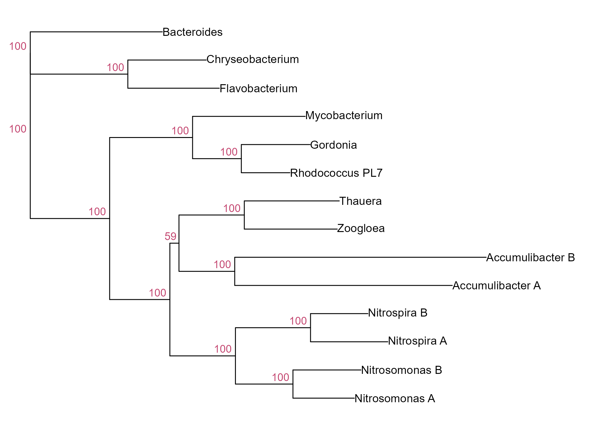

Module 10 · Lesson 9 of 13 Week 155 of 160 About 5–7 hours
Phylogenetic trees II
Parsimony, likelihood and the bootstrap
Judge trees by the characters themselves. Count the fewest changes a tree needs with Fitch’s parsimony algorithm, written by hand; compute a tree’s likelihood under the Jukes-Cantor model with Felsenstein’s pruning algorithm, also by hand; use likelihood to choose between the three possible trees of four bacteria, with branch lengths fitted by optim(); and measure confidence in each branch of the neighbour-joining tree with Felsenstein’s bootstrap.
Distance methods squeeze each pair of sequences into one number. Character-based methods use the alignment itself, site by site: a tree is good if it explains the observed bases well. Maximum parsimony prefers the tree that needs the fewest changes; maximum likelihood prefers the tree under which the data are most probable, given a model of evolution. And whatever the method, the bootstrap asks how much each branch would survive if the data had been a little different.
The usual R package for both, phangorn, doesn’t run in the browser version of R, so this lesson writes the two classic algorithms by hand, which is the best way to understand them anyway, and uses ape for the bootstrap.
Two algorithms from the 1970s, both under 15 lines of R: Fitch’s for parsimony and Felsenstein’s for likelihood. Every modern phylogenetics program still runs them inside.
In this lesson you’ll:
- compute a tree’s parsimony score with Fitch’s algorithm, and compare trees by it
- find the parsimony-informative sites
- compute substitution probabilities under the Jukes-Cantor model
- compute a tree’s likelihood with Felsenstein’s pruning algorithm
- choose among the three trees of four taxa by maximum likelihood
- measure branch support with the bootstrap
The setup code reads the alignment as a character matrix, and defines two functions you’ll use: fitch() and loglik(). Both work on all 1,200 sites at once.
Parsimony
Fitch’s algorithm (1971) counts the minimum number of changes a tree needs at one site. Working from the tips toward the root, give each node a set of bases: if its two children’s sets overlap, take the intersection; if not, take the union and count one change. The total over all sites is the tree’s parsimony score; the most parsimonious tree has the smallest.
Your turn. Do one site by hand. Four taxa on the tree ((A,B),(C,D)) have bases a, a, g and a at some site. Run Fitch’s rule: the (A,B) node, the (C,D) node, then the root.
At the root, intersect the two children’s sets: ab and cd.
ab <- intersect("a", "a") # A and B agree
cd <- if (length(intersect("g", "a")) > 0) intersect("g", "a") else union("g", "a")
root <- if (length(intersect(ab, cd)) > 0) intersect(ab, cd) else union(ab, cd)
changes <- (length(intersect("g", "a")) == 0) + (length(intersect(ab, cd)) == 0)
list(ab = ab, cd = cd, root = root, changes = changes)The (A,B) node gets {a}; the (C,D) node gets {g, a} (no overlap: one change); the root gets {a} (overlap: no change). One change in all: an A→G on the branch to C. The fitch() function in the setup does exactly this for every site at once, with bases coded as bits so that intersection and union are bitwAnd() and bitwOr().
Your turn. Compute the parsimony score of the neighbour-joining tree from Lesson 8.
The alignment as characters is X.
nj_tree <- nj(dist.dna(s16, model = "JC69"))
fitch(nj_tree, X)1,385 changes, over 1,200 sites. On its own, the number means little; it’s for comparing trees on the same data.
Your turn. Compare the parsimony scores of the true tree, the neighbour-joining tree and the UPGMA tree.
The UPGMA tree is up_tree.
truth <- read.tree("data/bioreactor_true_tree.nwk")
nj_tree <- nj(dist.dna(s16, model = "JC69"))
up_tree <- as.phylo(hclust(dist.dna(s16, model = "K80"), "average"))
sapply(list(truth = truth, nj = nj_tree, upgma = up_tree), function(tr) fitch(tr, X))The true tree and the neighbour-joining tree both need 1,385 changes (they have the same topology; parsimony ignores branch lengths), and the UPGMA tree 1,416: 31 more, the price of tearing the Accumulibacter pair apart. Parsimony agrees with Lesson 8’s verdict.
Your turn. Not every site helps choose between trees. A site is parsimony-informative if at least two bases each occur in at least two sequences; a constant site, or one with a single odd base out, costs the same on every tree. Count them.
Bases occurring at least twice: >= 2.
informative <- apply(X, 2, function(col) sum(table(col) >= 2) >= 2)
constant <- apply(X, 2, function(col) length(unique(col)) == 1)
c(sites = ncol(X), constant = sum(constant), informative = sum(informative))Of the 1,200 sites, 594 are constant and 432 are parsimony-informative; the other 174 vary, but with only one sequence different, which costs one change on any tree. Only the informative sites decide between trees. Constant sites still matter for likelihood, because they tell the model how slowly the gene evolves.
Maximum likelihood
Parsimony ignores branch lengths and multiple changes, and it can be inconsistent: with long branches, it can prefer a wrong tree more and more strongly as data accumulate (Felsenstein, 1978). Maximum likelihood uses a model instead. Under the Jukes-Cantor model, the probability that a base stays the same along a branch of length t (substitutions per site) is
P_{ii}(t) = \tfrac14 + \tfrac34 e^{-4t/3}, \qquad P_{ij}(t) = \tfrac14 - \tfrac14 e^{-4t/3}\ (i \ne j).
Your turn. Compute the 4 \times 4 probability matrix for t = 0.1 and for a very long branch, and check that its rows sum to 1.
A very long branch: try 10.
P1 <- jc_P(0.1); P10 <- jc_P(10)
c(same_0.1 = P1[1, 1], change_0.1 = P1[1, 2], row_sum = sum(P1[1, ]), same_long = P10[1, 1])For a branch of 0.1 substitutions per site, a base stays the same with probability 0.906 and changes to each particular other base with 0.031 (the three add up to 0.094; rows sum to 1). After a very long branch, every base has probability 0.25: the sequence has forgotten where it started, which is why the Jukes-Cantor distance goes to infinity at 75% difference.
The likelihood of a tree sums over every possible base at every ancestor: 4^{12} combinations per site for 14 taxa. Felsenstein’s pruning algorithm (1981) does it in one pass from the tips to the root: each node’s partial likelihood for each base is the product, over its children, of \sum_y P_{xy}(t)\,L_{\text{child}}(y), a matrix product. The setup’s loglik() is that algorithm, for all sites at once.
Your turn. Compute the log-likelihoods of the true, neighbour-joining and UPGMA trees, each with its own branch lengths.
Apply loglik.
truth <- read.tree("data/bioreactor_true_tree.nwk")
nj_tree <- nj(dist.dna(s16, model = "JC69"))
up_tree <- as.phylo(hclust(dist.dna(s16, model = "JC69"), "average"))
sapply(list(truth = truth, nj = nj_tree, upgma = up_tree), function(tr) loglik(tr, X))-8{,}507 for the neighbour-joining tree, -8{,}522 for the true tree, and -8{,}606 for UPGMA. The NJ tree beats even the true tree, because the two have the same topology but NJ’s branch lengths were estimated from these data, while the true tree carries the simulation’s lengths, and the Jukes-Cantor model ignores the simulation’s rate variation. UPGMA’s tree is 99 log-likelihood units worse: an enormous difference.
Maximum likelihood also fits the branch lengths, which is where the work is. For four taxa there are only three unrooted trees, so we can fit each and compare.
Your turn. For PL-7, Gordonia, Mycobacterium and Nitrosomonas_A, fit the five branch lengths of each of the three possible trees by maximizing the likelihood with optim(), and compare.
optim() returns the minimum it found as value.
four <- c("Rhodococcus_PL7", "Gordonia", "Mycobacterium", "Nitrosomonas_A")
X4 <- X[four, ]
topologies <- c(PL7_Gordonia = "((Rhodococcus_PL7,Gordonia),Mycobacterium,Nitrosomonas_A);",
PL7_Myco = "((Rhodococcus_PL7,Mycobacterium),Gordonia,Nitrosomonas_A);",
PL7_Nitro = "((Rhodococcus_PL7,Nitrosomonas_A),Gordonia,Mycobacterium);")
fit_one <- function(newick) {
tr <- read.tree(text = newick)
negll <- function(logt) { tr$edge.length <- exp(logt); -loglik(tr, X4) }
opt <- optim(rep(log(0.05), nrow(tr$edge)), negll, method = "BFGS")
-opt$value
}
sapply(topologies, fit_one)-3{,}294 for PL-7 with Gordonia, against -3{,}326 and -3{,}326 for the other two: a difference of 31 log-likelihood units, so the data are about e^{31} \approx 10^{13} times more probable under the first tree. With 14 taxa there would be (2 \times 14 - 5)!! \approx 3 \times 10^{11} trees, too many to fit one by one, which is why ML programs search.
The bootstrap
How sure are we of each branch? Felsenstein’s bootstrap (1985) resamples the alignment’s columns with replacement (Module 4’s bootstrap, applied to sites), builds a tree from each resample, and reports for each branch of the original tree the percentage of bootstrap trees that contain it. Values above about 70% are usually taken as good support; low values flag branches the data can’t settle.
Your turn. Bootstrap the neighbour-joining tree with 100 resamples using boot.phylo().
100 resamples.
build <- function(x) root(nj(dist.dna(x, model = "JC69")), outgroup = outgroup, resolve.root = TRUE)
tr <- build(s16)
set.seed(10091)
support <- boot.phylo(tr, s16, build, B = 100, quiet = TRUE)
c(nodes = length(support), min = min(support, na.rm = TRUE), at_least_70 = sum(support >= 70, na.rm = TRUE))13 internal nodes (the first, the root, gets no value); 12 have at least 70% support, and the weakest has 59%.

Your turn. Find the weakest branch: the clade with the lowest support, and its members.
Node number Ntip(tr) + k.
build <- function(x) root(nj(dist.dna(x, model = "JC69")), outgroup = outgroup, resolve.root = TRUE)
tr <- build(s16)
set.seed(10091)
support <- boot.phylo(tr, s16, build, B = 100, quiet = TRUE)
k <- which.min(support) # support[k] belongs to node Ntip + k
weak <- extract.clade(tr, Ntip(tr) + k)
list(support = support[k], members = sort(weak$tip.label))59% for the clade grouping the two Accumulibacter with Zoogloea and Thauera: the short internal branch that the Kimura NJ tree got wrong in Lesson 8. The data favour this grouping, but not decisively; a careful report would say so, or show the branch as unresolved.
NoteGo deeper: tree search, model choice and what bootstrap values mean
With more than a handful of taxa, the likelihood can’t be computed for every tree; programs search: start from a good tree (often neighbour joining), then try rearrangements (nearest-neighbour interchanges, subtree pruning and regrafting) and keep the improvements, fitting branch lengths for each. RAxML and IQ-TREE do this for thousands of taxa, under models chosen by AIC or BIC (Module 2) from a menu like JC, K80, HKY and GTR, each with or without gamma-distributed rates (+G) and invariant sites (+I). A Bayesian analysis (MrBayes, BEAST; Module 5’s MCMC) samples trees from their posterior instead, and reports posterior probabilities for clades. Bootstrap values are not probabilities that a clade is true: they measure how consistently the data support it, and they’re conservative for well-supported clades and sometimes misleading under a wrong model. Joseph Felsenstein’s Inferring Phylogenies (Sinauer, 2004), chapters 7, 16 and 20.
Challenge round
Challenge 1 · UPGMA’s confidence. Bootstrap the UPGMA tree the same way (100 resamples, Kimura distances), and look at the support of the clade it wrongly built. Does the bootstrap warn you?
100 resamples again.
build_up <- function(x) as.phylo(hclust(dist.dna(x, model = "K80"), "average"))
up <- build_up(s16)
set.seed(10092)
support <- boot.phylo(up, s16, build_up, B = 100, quiet = TRUE)
c(min = min(support, na.rm = TRUE), median = median(support, na.rm = TRUE))Most of UPGMA’s branches have 100% support (the median), and the weakest 23%. The bootstrap measures how consistently the method gives the same answer from resampled data, not whether the answer is right: UPGMA’s misplacement of the fast lineage is a bias, not noise, and resampling the same sites reproduces the same bias. A method that’s wrong can be confidently wrong.
Challenge 2 · Search for the ML tree. In RStudio, install phangorn (it works there) and run optim.pml(pml(nj_tree, phyDat(s16)), optNni = TRUE, model = "K80", optGamma = TRUE). Does the maximum likelihood tree match the true tree? Is the estimated gamma shape close to the simulation’s 0.5?
Quick quiz
1. Fitch’s algorithm counts a change at a node when:
Then the node takes the union, at the cost of one change.
2. A parsimony-informative site needs:
Other sites cost the same on every tree.
3. Under Jukes-Cantor, after a very long branch, the probability that a base is unchanged tends to:
The base becomes random.
4. Felsenstein’s pruning algorithm avoids:
Partial likelihoods are combined node by node.
5. A bootstrap support of 45% for a clade means:
Bootstrap values measure consistency, not probability.
6. Why can parsimony go wrong with long branches?
Likelihood with a suitable model accounts for multiple hits.
Wrap-up
You’ve judged trees by their characters. Here’s what you’ve learned:
- Parsimony: Fitch’s algorithm counts the minimum changes; the neighbour-joining and true trees need 1,385 changes, UPGMA’s more; 432 of the 1,200 sites are informative.
- Likelihood: Jukes-Cantor transition probabilities and Felsenstein’s pruning give a tree’s likelihood; for four taxa, maximum likelihood picks PL-7 with Gordonia.
- The bootstrap: resampling sites gives support for each branch; most of the NJ tree’s branches have strong support, and the weakest is the one Lesson 8 found uncertain.
TipPractice in RStudio (optional, about an hour)
Download bioreactor_16s.fasta and bioreactor_true_tree.nwk into your project’s data-raw/ folder, and install ape and phangorn.
- Check your functions. Compare
fitch()withphangorn::parsimony()andloglik()withphangorn::pml(tree, phyDat(s16))$logLikfor the NJ tree. They should agree. - Parsimony search.
optim.parsimony(nj_tree, phyDat(s16))searches for the most parsimonious tree. Is it the true tree? - Long-branch attraction. Simulate four taxa with two long branches on opposite sides of the tree (phangorn’s
simSeq()), and compare parsimony and maximum likelihood as the number of sites grows from 100 to 10,000. - Model choice.
phangorn::modelTest(phyDat(s16), tree = nj_tree)compares substitution models by AIC and BIC. Which model wins? (The data were simulated under K80 with gamma rates.)
NoteKey words from this lesson
- Maximum parsimony
- Choosing the tree that requires the fewest character changes.
- Fitch’s algorithm
- Computing the minimum number of changes for a site on a tree, with sets of states at the nodes.
- Parsimony-informative site
- A site with at least two states, each in at least two sequences.
- Maximum likelihood
- Choosing the tree and parameters under which the data are most probable.
- Felsenstein’s pruning algorithm
- Computing a tree’s likelihood by combining partial likelihoods from the tips to the root.
- Bootstrap support
- The percentage of trees from column-resampled alignments that contain a given clade.
- Long-branch attraction
- The tendency of some methods to group long branches together, wrongly.
- Consistency
- A method’s property of converging to the true answer as the data grow.
NoteWant to read more?
- Joseph Felsenstein, Inferring Phylogenies (Sinauer, 2004), chapters 2, 16 and 20, on parsimony, likelihood and the bootstrap, by the inventor of the last two.
- Joseph Felsenstein, “Evolutionary trees from DNA sequences: a maximum likelihood approach”, Journal of Molecular Evolution 17, 1981, pages 368 to 376, where the pruning algorithm appeared.
- Klaus Schliep, “phangorn: phylogenetic analysis in R”, Bioinformatics 27, 2011, pages 592 to 593, and the package’s vignettes, for doing all of this in RStudio.